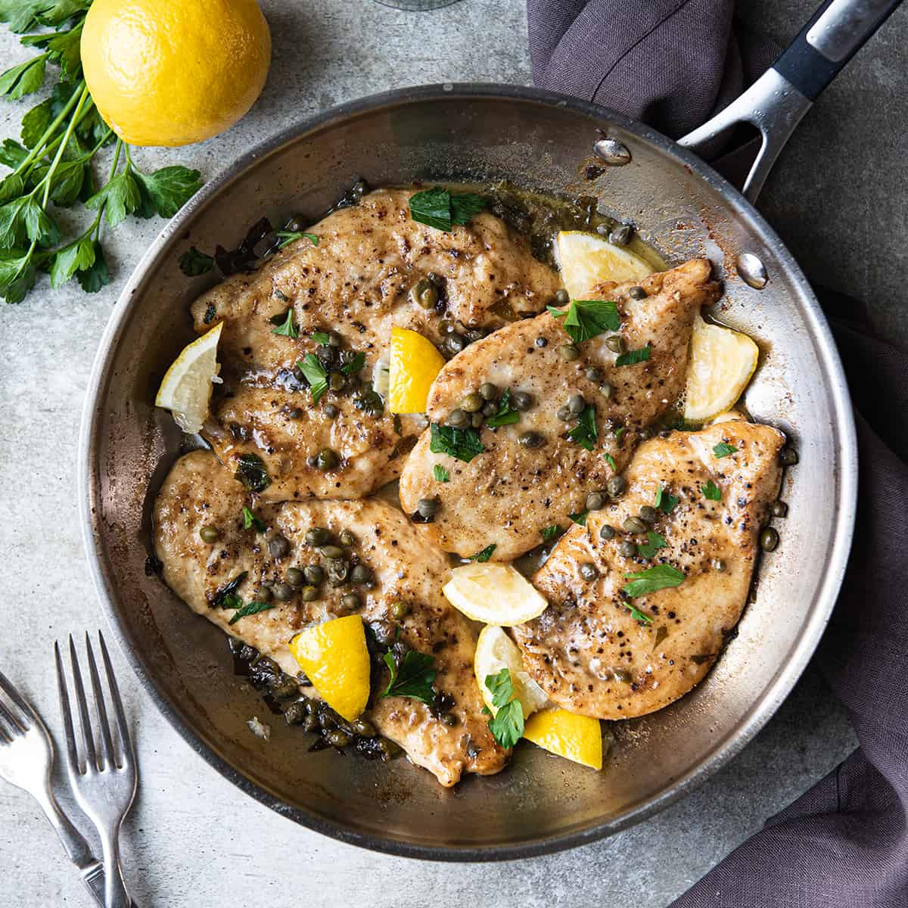

Chicken Piccatta

Description: How to make a delicious Chicken Piccata
This recipe uses half the oil than the classic without sacrificing any of the flavor. If you don't have a meat mallet or small heavy
skillet, try using a wooden rolling pin, making sure all the chicken's pounded into an even thinness so it cooks evenly.
Try serving the chicken with mashed potatoes, couscous, angel hair pasta, or roasted seasonal root vegetables for a meal that's easy
enough for a weeknight dinner, but fancy enough to serve guests.
Ingredients
- 4 (6-ounce) skinless, boneless chicken breast halves
- 2 ounces all-purpose flour, divided (about 1/2 cup)
- ½ teaspoon kosher salt
- ¼ teaspoon freshly ground black pepper
- 2 ½ tablespoons butter, divided
- 2 tablespoons olive oil, divided
- ¼ cup finely chopped shallots
- 4 medium garlic cloves, thinly sliced
- ½ cup dry white wine
- ¾ cup fat-free, lower-sodium chicken broth, divided
- 2 tablespoons fresh lemon juice
- 1 ½ tablespoons drained capers
- 3 tablespoons coarsely chopped fresh flat-leaf parsley
Steps:
- Place each chicken breast half between 2 sheets of heavy-duty plastic wrap; pound to 1/2-inch thickness using a meat mallet or
small heavy skillet. Place 1 teaspoon flour in a small bowl, and place remaining flour in a shallow dish. Sprinkle both sides of
chicken evenly with salt and pepper. Dredge chicken in flour in shallow dish; shake off excess.
- Melt 1 tablespoon butter in a large skillet over medium-high heat. Add 1 tablespoon oil to pan; swirl to coat. Add chicken to pan;
sauté 4 minutes on each side or until done. Remove chicken from pan; keep warm.
- Heat remaining 1 tablespoon oil in pan; swirl to coat. Add shallots to pan; sauté 3 minutes, stirring frequently. Add garlic;
sauté 1 minute, stirring constantly. Add wine; bring to a boil, scraping pan to loosen browned bits. Cook until liquid almost
evaporates, stirring occasionally. Add 1/4 cup broth to reserved 1 teaspoon flour; stir until smooth. Add remaining 1/2 cup broth to
pan; bring to a boil. Cook until reduced by half (about 5 minutes). Stir in flour mixture; cook 1 minute or until slightly thick,
stirring frequently. Remove from heat; stir in remaining 1 1/2 tablespoons butter, juice, and capers. Place 1 chicken breast half on
each of 4 plates; top each serving with about 2 tablespoons sauce. Sprinkle each serving with about 2 teaspoons parsley.